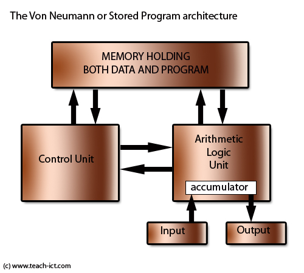
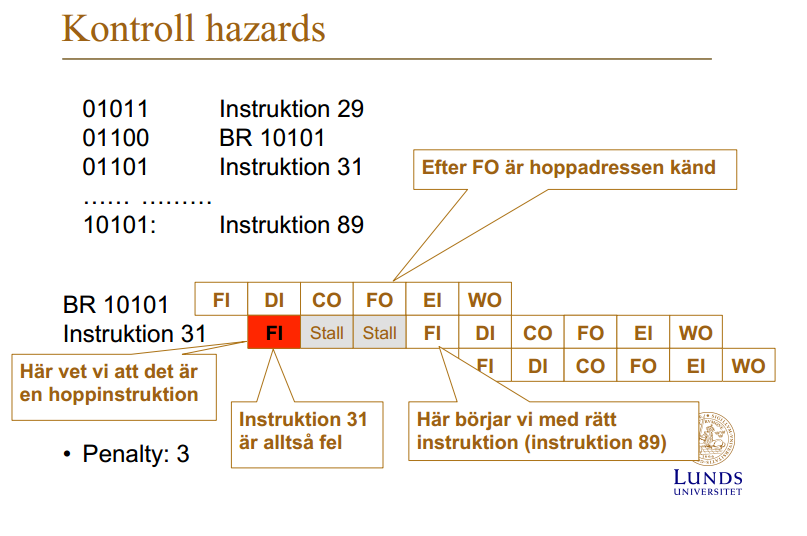

Visa påGitHub
Visa påGitHub
Varning: Dessa svar är skrivna av studenter och är därför inte garanterat rätt och absolut inte förklarat på bästa sätt, förbättringar välkomnas!
Processorn
Vad är Moores lag?
Moores lag är observationen att antalet transistorer i en integrerad krets dubbleras ungefär vartannat år.
Vem är Von Neumann?
John von Neumann var en matematiker som bland annat beskrev den datorarkitektur som lade grunden till dagens moderna datorarkitekturer. Den datorarkitekturen, Von-Neumann arkitekturen, gick ut på att se program och datan som programmet använder, som samma sak och placera de i samma minne. Här är ett diagram som visar Von-Neumann arkitektur.

Vad gör en kompilator?
En kompilator översätter ett högnivå programspråk till ett annat med lägre nivå, ofta assembly eller direkt till maskinkod.
Vad gör en assemblator?
Assemblerar assemblerkod till maskinkod.
Ge exempel på högnivåspråk?
C och C++ är de vanligaste språken som kompilerar till assembler eller maskinkod medans Java är ett annat exempel som kompilerar till bytekod som sedan körs av en virtuell maskin (i detta fall JVM).
Vad skiljer ett högnivåspråk från ett maskinspråk?
Datorn kan inte direkt läsa ett högnivåspråk utan det måste genomgå kompilation till maskinspråk (eller bytekod om det ska köras i t.ex. JVM) för att kunna exekveras. Det är också lättare att producera kod säkert och lättförståerligt i högnivåspråk, medans assembly-kod tenderar att vara jobbigt att både utveckla och förstå/läsa.
Görs alla beräkningar (+, -, ..., AND, OR) i ALU:n?
Nej, inte de som involverar flyttal.
Ge exempel på indata och utdata till en kontrollenhet
Ge exempel på fördelar med att använda register för att lagra data
Data i register tar mindre tid att hämta än data i t.ex. CPU cache, RAM-minne eller från disk. Det går även snabbare att spara till register. I en pipelinearkitektur så kan dessutom register användas av flera instruktioner samtidigt, vilket inte är möjligt med t.ex. primärminne.
Om en processor gör ”Fetch” och ”Execute”, vad görs under ”Fetch? Vad görs under ”Execute”? Är det som görs under ”Fetch” samma för alla instruktioner”
Pipelining
Vad är pipelining?
Pipelining är när processorn kör flera olika instruktioner samtidigt genom att tillåta en instruktion i varje fas (t.ex en i "Fetch" och en i "Execute").
Vilka konflikter kan uppstå i en pipeline?
Strukturella konflikter
När en två pipelineade instruktioner försöker använda en hårdvarukomponent (ex. primärminnet) samtidigt
Datakonflikter
När en instruktion beror på data som påverkas av en exekverande instruktion (Uppstår när en instruktion väntar på resultaten från en annan instruktion) Penalty kan minskas med hjälp av forwarding/bypassing. Instruktionerna kan även omordnas så att andra instruktioner körs medans den beroende instruktionen ändå bara hade väntat på svar.
Kontrollkonflikter
När en instruktion som låg direkt efter en branch instruktion påbörjat exekvering, men som senare visar sig inte ska exekveras. Alltså då om branchen genomfördes.
Illustrera hur konflikter uppstår?
Denna bilden är hämtad från pipelining föreläsningen.

Vad kan man göra för att undvika konflikter?
Generell åtgärd är att sätta stalls, eller 'nop'-instruktioner, efter varje instruktion som kan orsaka en pipelinekonflikt. En annan åtgärd, inriktat mot att förhindra kontrollkonflikter, är att använda sig av delayed branching (förklaras nedan.)
Vad är branchpredikion?
När processorn försöker, med hjälp av en predictionalgoritm, gissa vilken väg en kommande branch-instruktion kommer ta. Det finns två generella strategier för detta:
Alternativ förklaring: Ett sätt att undvika control hazards genom att förutse om en conditional branch-instruktion kommer att leda till branch eller ej och börjar exekvera nästkommande spekulerade instruktion, så kallad spekulativ exekvering.
Statisk prediktion, där man inte tar hänsyn till historiken. Olika implementeringar:
- Predict never taken – antar att hoppet inte kommer
tas (Motorola 68020) - Predict always taken – antar att hoppet alltid kommer tas - Predict beroende på riktning (Power PC 601): - Predict branch taken för tillbaka hopp - Predict branch not taken för framåt hopp'
**Dynamisk prediktion**, där man tar hänsyn till historiken:
- 1-bit prediktering: Man sparar vad som hände vid förra branchen, och antar att samma kommer hända vid nästa branch-instruktion.
- 2-bit prediktering: Man använder en state-machine, vilket är lättast förstått av att titta på diagrammet nedan, som är hämtat från Pipelining föreläsningen.

Vad är spekulativ exekvering?
När processorn börjar exekvera instruktioner baserat på branch-gissningen gjord av en branch-prediction.
Delayed branching – vad är det? Ge ett exempel.
När instruktioner körda innan en branch-instruktion, som inte kommer påverka om branchen kommer genomgöras eller ej, läggs precis efter en branch-instruktion så stall/nop inte behövs.
Ett exempel innan delayed branching:
... add $5, $6 # $5 = $5 + $6, i.e. something that doesn't affect the beq statement beq $1, $2, some_label # Branch to some_label if $1 == $2 nop ...Ett exempel med delayed branching:
... beq $1, $2, some_label # Branch to some_label if $1 == $2 add $5, $6 # $5 = $5 + $6. Now replaces the nop statement ...Alternativ förklaring: Det är att assemblern ordnar om instruktionerna så att något alltid görs direkt efter en branch instruktion (i branch delay slot) där processorn annars hade idlat.
Ge exempel på en kompilatorteknik som kan användas för att unvika/hantera konflikter i pipelinen.
Delayed branching är en teknik som kompilatorer kan använda för att minska pipelinekonflikter. Även automatisk nop-insättning efter alla instruktioner känsliga för strukturella- och datakonflikter, som
lw(Load word).Båda dessa utnyttjas när man anger assemblydirektivet '.setreorder' i MIPS.
Minne
Hur lagras information på en hårddisk?
En hårddisk (ej SSDs) lagrar information på magnetiska skivor som läses med ett läshuvud.
Vad är random access när man talar om minnen?
Att alla sektorer på minnet tar lika ungefär lång tid att hämta.
Ge exempel på minne som inte har random access?
I hårddiskar (ej SSDs) kan olika sektorer ta olika lång tid att hämta beroende på sektorns avstånd från läshuvudet tidigare position. Därmed går det snabbare att läsa i sekvens på hårddiskar. Defragmentering kan användas för att minimera avståndet mellan relaterade sektorer.
Vad är en minneshierarki?
En minneshierarki är ett system där man har snabba, men små, minnen högst upp (närmast CPUn) och långsamma, men stora, minnen längst ner (längst ifrån CPUn).
Det finns ofta flera nivåer emellan, ett exempel på en vanlig hierarki är:
- Register
- L1 cache
- L2 cache
- L3 cache
- RAM
- Hårddiskar (som i sig själva kan innehålla minneshierarkier då de själva har cacheminne)
- Externa lagringsmedia
Siffror som
Varför uppstår en minneshierarki?
En minneshierarki uppstår för att vi kan inte ha både stora och snabba minnen; man måste kompromissa. Därför lägger man mindre, snabbare minnen närmare processorn för att öka snabbheten och minska accesstid och större, långsammare minnen längre från processorn.
Vad kallas principen som gör att cacheminne fungerar? Förklara principen. Ge ett exempel på programkod där cacheminne INTE ger någon vinst.
Lokalitetsprincipen, gör
Principen är Lokalitet av referenser, varpå det finns två viktiga subprinciper: * Temporal lokalitet: Om en instruktion/data blivit refererad nu, så är sannlokhuteten stor att samma referens görs inom kort. * Rumslokalitet: Om instruktion/data blivit refererat nu, så är sannolikheten stor att instruktioner/data vid addresser i närheten kommer användas inom kort.
Vad är en cachemiss? Varför uppkommer cachemissar? Hur hanteras det?
Cacheminnen kan ha olika mappningar – vilka? Hur fungerar varje mappning?
- **Direktmappning**
Man placerar instruktionen på *nästan* samma plats som den är på i minnet. Man placerar den på följande index:
`Cacheindex = Instruktionens address i minnet % cachestorlek`
Är den platsen i cachen upptagen av något annat så skriver man helt enkelt över det.
- **Associativemappning**
Innebär att man bara fyller på cacheminnet på följd och använder ersättningsalgoritm vid cachemiss i ett fullt cacheminne.
- **Set-associative mappning**
Detta är en blandning mellan direkt- och associativmappning. Man delar in cacheminnet i flera *sets*, mappar vissa instruktionsaddresser till dessa sets, och använder associativmappning inom varje set. Ett exempel skulle vara om man har två sets, en för alla instruktioner med en udda address och en för alla med jämn address. Inom varje set använder man dock associativmappning.
I direktmappning, hur ersätts cacherader vid cachemissar?
De skrivs över utan vidare.
Vad är en ersättningsalgoritm?
En algoritm som används vid associativemappning (samt inuti varje set i set-associative mappning) för att bestämma vilken/vilket cacherad/cacheblock som ska kastas ut för att göra plats för det nya. Det finns tre stycken nämnda i cacheminneföreläsningen i denna kursen:
- **Least recently used (LRU)** – kandidat är den cacherad vilken varit i cachen men som inte blivit refererad (läst/skriven) på länge
- **First-In First Out (FIFO)** – kandidat är den som varit längst i cacheminnet
- **Least frequently used (LFU)** – kandidat är den cacherad som refererats mest sällan
Vad menas med att cacheminnet inte är konsistent? Hur hålls ett cacheminne konsistent?
Antag ett program som exekverar alla instruktioner i en sekvens (en i taget) och att det finns ett cacheminne för instruktioner där cacherader har storlek 64bytes och varje instruktion kräver 2 bytes. Vad är sannolikheten för att nästa instruktion finns i samma cacherad som förra instruktion?
Sannolikheten är
31/32då antalet instruktioner per cacherad är64/2 = 32vilket innebär att sannolikheten är1/32att nästa instruktion ligger på nästa cacherad. Det omvända fallet blir då som sagt1-(1/32) = 31/32.Vad är fördelen med paging?
Att man dynamiskt laddar in data i minnet på begäran och laddar ur det när det ej används.
Vad är nackdelar med paging?
Det tar tid att ladda in och ur sidor ur minnet.
Vad är fragmentering när vi pratar om paging?
Vad är skillnaden på extern fragmentering och inter fragmentering?
Intern fragmentering är när hela kapaciteten av ett block inte används. Extern fragmentering är när det uppstår icke-allokerade luckor i minnet mellan allokerade segment.
Vad är paging?
Paging är en metod för att ladda in program och data från sekundärminnet till primärminnet.
Vad är en sida (page), ram (frame)?
Primärminnet är uppdelat i frames, som kan fyllas med pages som är uppdelade program eller data.
Om en sida är 2 kBytes, kan man säga något om storleken på primärminnet? Kan man säga något om storleken av en ram?
Vad är demand paging?
Demand paging är när sidor endast laddas när deras innehåll efterfrågas och aldrig innan.
Vad är så kallad trashing? När uppkommer det?
Thrashing uppkommer när ett program friar upp ramar som regelbundet används. Detta gör att de genomgår flera cykler av att laddas in och laddas ur under kort tid vilket leder till att en stor mängd resurser går åt att ladda in och ur sidor minnet.
Vad är skillnaden på paging och virtuellt minne?
Virtuellt minne mappar en process virtuella adressintervall till sidor i primärminnet eller data i sekundärminnet. Paging hanterar (ur)laddningen av data från sekundärminnet till primärminnet.
Vad är sidfel?
Sidfel är när ett program försöker komma åt data som inte ligger i RAM minnet.
Vad händer vid sidfel? Hur hanteras det?
Operativsystemet fångar upp felet, letar upp datan i sekundärminnet, skaffar sig en tom ram, om ingen tom ram finns så används en sidersättningsalgoritm för att fria upp en ram, datan laddas in i ramen som läggs till i sidtabellen, instruktionen som gav upphov till felet körs om och återställer därmed kontrollen till programmet.
Operativsystem
Vad gör ett operativsystem?
Kärnan hanterar hårdvaruresurser, t.ex. arbetsminne, in/ut-enheter och processortid. Användarprogram
Alternativt svar:
- Filsystemshantering
- Minneshantering
- Processhantering
- Avbrott
- In- och utmatning
- Nätverk
- Säkerhet
- Drivrutiner
Vad är multitasking?
Att flera program körs samtidigt (eller iallafall att det uppfattas som att de gör det)
En användare känner att flera program exekverar samtidigt, hur är det möjligt?
Schemaläggaren tilldelar klockcykler på ett sådant sätt att användaren inte märker av att saker görs i en viss ordning och inte samtidigt.
Vad är ett kontextbyte?
Ett byte av vilken tråd som för stunden exekverar.
Hur går ett kontextbyte till? Hur vet man om att det ska ske? Vem är inblandad?
Först har schemaläggaren beslutat om ett byte mellan två trådar. När detta byte sedan genomförs så sparas tillståndet (t.ex. register) undan för den nuvarande tråden för att den nya tråden ska kunna ladda in det tillstånd som den nya tråden har undansparat sedan tidigare, detta är för att bevara trådar/processers tillstånd mellan byte av trådar.
Behövs avbrott för att klara av att göra kontextbyten?
Nej, man kan också göra det genom
Hur fungerar avbrott?
Om man skapar en struktur för att lagra filer, vad vill man uppnå?
Kunna strukturellt allokera utrymme åt filer på disken.
Om man ska läsa in en fil från en hårddisk, vad påverkar lästiden?
Fragmentering Filsystemet Hårddiskens specifikationer
Källan för instuderingsfrågorna finns i instuderingfrågor.pdf som ursprungligen kommer härifrån http://www.eit.lth.se/fileadmin/eit/courses/eit070/2015/Instuderingsfr%E5gor.pdf.